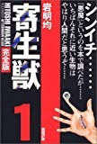
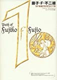
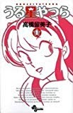

FAVORITES
マンガ
寄生獣 岩明均
右手に寄生したミギーと協力して、人間になりすまし人を食う寄生獣と戦う話。
この作品は深い。
一度は誰でも「人間を殺してはいけないのに、他の動物を殺して食っていいのはなぜか？」
とか考えたことがあるのではないだろうか。
この作品では、人間を食う知的な生物を出すことにより、人間と他の生物の関係を考えさせる。
なんせ寄生獣は我々と同じようにただご飯を食べているだけなのだから。
さらに、この作品はエンターテイメントとしても第一級である。
現時点で最も面白いマンガといっても過言ではないと思う。

寄生獣―完全版 (1) (アフタヌーンKCDX (1664))
posted with amazlet at 09.10.23
岩明 均
講談社
おすすめ度の平均:


人間愛

久しぶりに読み直して

人間として

地球の意志で生まれたのか寄生獣たちは・・・？ミギー誕生

侵略者との話し合いが可能か不可能かで人類の未来も大きく違うことだろう。
amazon:寄生獣 全10巻完結 [マーケットプレイス コミックセット]

藤子・F・不二雄のＳＦ短編集 藤子・F・不二雄
SFとは「少し 不思議」の意味。
藤子不二雄は大人向けにもこんなに素晴らしい作品を残している。
僕はこれらの多くの作品を貫くテーマは、「価値観の相対主義」であると考える。
例えば、人と牛の立場が逆転した世界、性欲はオープンにしていいが食欲は秘するべき世界などが描き出されている。
またコメディタッチの絵に隠された、彼の社会や文明に対する視線は恐ろしく悲観的である。
一押しは「カンビュセスの籤」「気楽に殺ろうよ」「大予言者」「ヒョンヒョロ」など。

藤子・F・不二雄SF短編PERFECT版 (1) (SF短編PERFECT版 1)
posted with amazlet at 09.10.23
藤子・F・不二雄
小学館
売り上げランキング: 138626
おすすめ度の平均:


感想

劇画オバQは漫画オバQを読んでから

日本語文化圏以外のﾏﾝｶﾞ好きに読ませたい

藤子・F・不二雄、その「SF」＝"少し不思議"の世界はどこまでも深し

久しぶりに藤子作品に夢中に。。
うる星やつら 高橋留美子
最近高橋留美子展で、うる星やつらの原画を見た。
懐かしい友達にあった気持ちがした。
この作品では数多くの魅力的なキャラクターが「このような状況のときこうする」というのがほとんど決まっていて、設定とその話の登場人物さえ高橋留美子が決めれば、勝手にキャラが動いて話を作っていったのではないだろうか？
そんなことを思わせるほどキャラが生き生きしている。

posted with amazlet at 09.10.23
高橋 留美子
小学館
おすすめ度の平均:


憧憬を感じる世界

う〜ん…

やっぱり不朽の名作

ダーリンただいまだっちゃ!!

うる星やつら全15巻完結(ワイド版) [マーケットプレイス コミックセット]
ラムちゃん